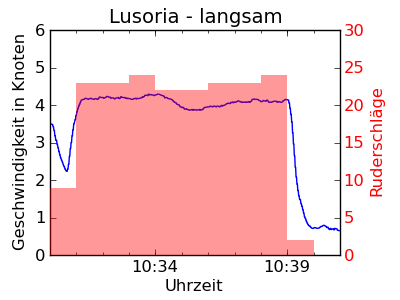
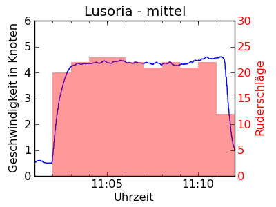
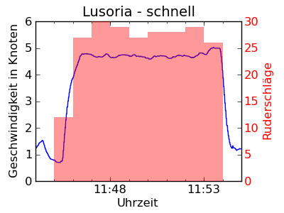
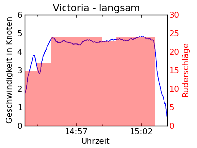
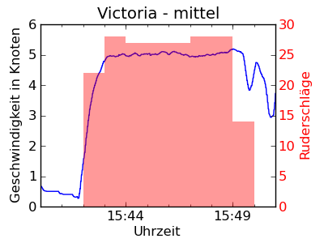
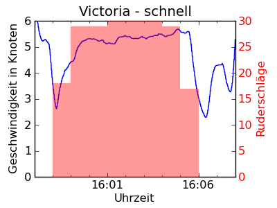

Vergleich der Rudereigenschaften von Lusoria und Victoria¶
Versuchsablauf¶
In diesem Test wurden die Lusoria Rhenana und die Victoria nacheinander von der gleichen Mannschaften gerudert. Mit jedem Boot wurden drei Testfahrten absolviert, die erste bei einem angenehmen Reisetempo, die zweite mit mehr Kraftaufwand und die dritte mit voller Leistung. Um die möglichst gleichen Bedingungen zu haben, war die Fahrtstrecke immer dieselbe. Auf dem Rückweg konnten sich die Ruderer ausruhen und die Lusoria Rhenana bzw. die Victoria wurde von einem Motorboot zurück zur Ausgangsposition geschleppt.
War die Strecke immer die gleiche?¶
Gerudert wurde immer von Westen nach Osten. Der Startpunkt wurde auf dem Wasser abgeschätzt, die Länge der Fahrstrecke mit dem Log und mit dem GPS gemessen. Tatsächlich liegen die Fahrtstrecken fast genau übereinander (Lusoria Rhenana und (Victoria).
Welche Rolle spielte der Wind?¶
Die Lusoria Rhenana und Victoria wurden beide gerudert. Auf beiden Schiffen war der Mast gesetzt, aber keine Rah angeschlagen. Aus vorausgegangenen Versuchen wissen wir, dass schon Mast und Rah allein eine messbare Segelwirkung entfalten können. Das gilt ebenso für das Schanzkleid des Schiffes, insbesondere bei Seitenwind. Am Tag des Tests schwankte die Windgeschwindigkeit zwischen 2,5 und 5,0 Knoten. Die erste Fahrt der Victoria lag auf Raumschotkurs (der Wind kam schräg von hinten), die anderen beiden fanden mehr oder weniger bei halbem Wind (Wind von der Seite) statt. Das bedeutet, dass der Wind auf der ersten Fahrt die Victoria leicht geschoben hat. Ebenso war eine kleine Drift zu messen, welche den Kiel des Schiffes zur Fahrtrichtung zwischen 5°-10° versetzte. Bei gesetztem Segel hätte diese Windgeschwindigkeit für eine Fahrtgeschwindigkeit um 2,0 Knoten ausgereicht [Victoria] (S. 146). Ohne Segel bewirkte der Wind sicherlich deutlich weniger, zumal er seitlich auf den Rumpf auftraf (Beim Segeln würde man das Segel nach dem Wind ausrichten; in diesem Versuch hingegen waren Rumpf, Mast und Rah statisch.). Zudem steigt der Widerstandsbeiwert für höhere Geschwindigkeiten stark an: Um eine Geschwindigkeit von 6 Knoten zu erreichen, ist eine ca. 15 mal größere Leistung erforderlich als um 2 Knoten zu erreichen [Victoria] (S. 87). Die Leistung, die der Wind erbringt, wäre im Verhältnis zu der Ruderleistung für die gemessene Geschwindigkeit selbst dann zu vernachlässigen, wenn das Segel gesetzt gewesen wäre.
Während der Fahrten mit der Lusoria Rhenana schwankte die Windrichtung zwischen einem Raumschotkurs (schräg von hinten) und vor dem Wind (von hinten). Die Windgeschwindigkeit war ähnlich wie auf der Victoria. Auch hier gilt, dass die erreichte Geschwindigkeit viel kleiner gewesen wäre, wenn die Lusoria Rhenana gesegelt statt gerudert worden wäre. Trotzdem unterstützte der Wind natürlich die Ruderer, zumal er in diesem Fall aus der richtigen Richtung auf Mast und Rah traf und es zumindest keinen Fahrtwind gab, der gebremst hätte.
Welche Geschwindigkeit wurde erreicht?¶
In der folgenden Tabelle zeigen wir die erreichten Geschwindigkeiten (kn = Knoten) und die mittlere Ruderfrequenz. Während der Fahrt wurde die Ruderschlagzahl pro Minute notiert. Die mittlere Ruderfrequenz berechnen wir aber nur aus den ganzen Minuten. Wenn die Fahrt z.B. um 11:46:27 beginnt, dann wissen wir nicht, wie viele Ruderschläge in den ersten 27 Sekunden dieser Minute gemacht wurden (mit langsamerem Tempo) und wie viele in den letzten 33 Sekunden (mit vollem Tempo).
| Schiff | Tempo | Uhrzeit | Geschwindigkeit | mittlere Ruderfrequenz |
|---|---|---|---|---|
| Lusoria | angenehm | 10:31:00-10:39:04 | 4.1 kn | 22.8 |
| Lusoria | schnell | 11:03:21-11:11:27 | 4.4 kn | 22.0 |
| Lusoria | maximal | 11:46:27-11:53:55 | 4.7 kn | 28.0 |
| Victoria | angenehm | 14:54:32-15:49:33 | 4.6 kn | 23.9 |
| Victoria | schnell | 15:42:44-15:49:33 | 5.0 kn | 27.5 |
| Victoria | maximal | 15:59:00-16:05:39 | 5.3 kn | 29.5 |
Im Folgenden zeigen wir die Daten. Die gemessene Geschwindigkeit über Grund ist mit der blauen Linie angezeigt, die Anzahl der Ruderschläge pro Minute mit roten Balken (rechte Achse).
|  |  |  |
|  |  |  |
{kind=link}
{kind=link}
{kind=link}
{kind=link}
{kind=link}
{kind=link}
Was lernen wir aus diesen Versuchen?¶
Während der Testfahrten wurden die Ruderer auch sportmedizinisch untersucht, um die erbrachte Leistung zu beurteilen. Dabei wurde der Puls aller 20 Ruderer während der Fahrt überwacht und im Anschluss eine Lactat-Messung durchgeführt, die ein Maß für die Übersäuerung der Muskeln ist. Das Ziel ist u.a. eine Abschätzung, welche Geschwindigkeiten wie lange zumutbar sind, d.h. welche Strecke man in 8-10 Stunden mit einem solchen Schiff unter Ruder zurücklegen könnte. Dies wird an anderer Stelle ausgewertet. Ein paar Dinge lassen sich aber direkt aus der Tabelle und aus den Grafiken ablesen:
- Man muss nicht unbedingt mehr Ruderschläge machen, um schneller voranzukommen. Die zweite Fahrt der Lusoria Rhenana erreichte eine höhere Geschwindigkeit mit weniger Ruderschlägen. Dabei musste natürlich jeder Ruderschlag lang und mit mehr Kraft durchgezogen werden. Gefühlt ist dies für die Mannschaft anstrengender, denn auch die Wirkung ist größer.
- Die Victoria war in diesen Versuchen schneller. Zusammen mit der Wettfahrt einen Tag vorher, die natürlich notgedrungen zeitgleich, d.h. mit unterschiedlichen Mannschaften durchgeführt werden musste, bestätigt dieses die Widerstandsmessungen der Schiffsbauversuchsanstalt, welche mit verkleinerten Modellen der beiden Schiffe der Victoria die besseren Rumpfeigenschaften bescheinigt.
Bemerkung
Da beide Schiffe nacheinander gerudert wurden, könnten natürlich die Faktoren Training (besserer Takt) oder Ermüdung (trotz 2 Stunden Pause zur Regeneration) einen Einfluss auf das Endergebnis gehabt haben. Eine Gegenprobe mit umgekehrter Reihenfolge wurde aber nicht durchgeführt.
| [Victoria] |
|